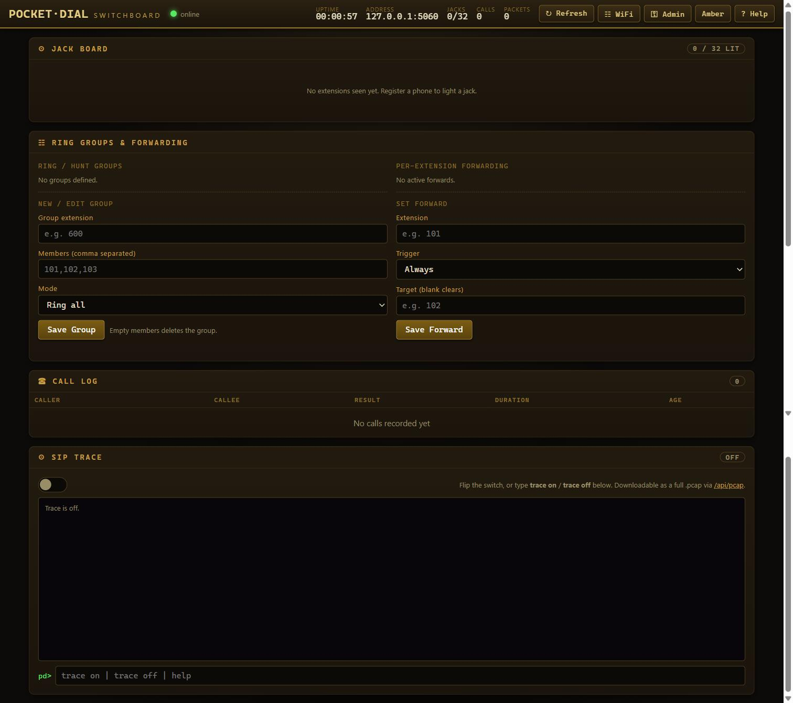

A lightweight, robust SIP registrar and stateless proxy designed for flat trusted local networks. Point any SIP phone at the server to connect instantly on secure, flat local subnets.

Experience the retro CGA-styled console built directly into the server. Execute commands in-browser to interact with the mock SIP registry.
High-efficiency engineering designed specifically to fit on resource-constrained microcontrollers and local host environments.
Any SIP endpoint registers immediately—no username or password is validated. Designed for flat, trusted LANs only. Do not expose SIP or the dashboard to the public Internet.
Voice data flows peer-to-peer directly between devices. The server handles only SIP signaling, ensuring minimal RAM consumption and low-latency audio transmission.
Features memory-safe header parsing, bounded string modifications, and dynamic_cast failure handling to prevent Xtensa reboots or desktop crashes.
Utilizes standard POSIX socket abstractions on Linux, Winsock on Windows, and native lwIP wrappers on ESP32 (running in a dedicated FreeRTOS 8KB stack task).
Explore pre-configured physical pinouts and code initialization templates for the industry-leading ESP32 and Ethernet boards.
Get the server running on your desktop with zero dependencies using our automated build scripts:
Critical specifications for running in development and field deployments:
Flat Trusted Networks: The zero-friction registrar trusts all local devices. This minimizes overhead, making it ideal for isolated labs, temporary networks, or rapid demonstrations.
WAN Isolation: Do not bind or port-forward UDP port 5060 or TCP port 8080 to public internet interfaces. Always run within secure local subnets or isolated VPN segments.